原文连接:https://www.cnblogs.com/imyanger/p/11874240.html
数据库的基本操作
在MySQL数据库中，对于一个MySQL示例，是可以包含多个数据库的。
在连接MySQL后，我们可以通过 show databases; 来进行查看有那么数据库。这里已经存在一些库了，其中information_schema、auth、mysql、performance_schema这几个库时是MySQL内置的（不同版本略有差异）。
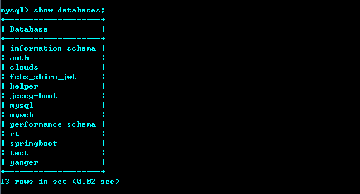
那如何新建自己的数据库呢？使用CREATE DATABASE 数据库名; 即可。
CREATE DATABASE 数据库名;这里我们已经成功创建了mysql_xuexi这个数据库了，然后我们再次show databases; 查询，就可以看到mysql_xuexi已经在列表了。
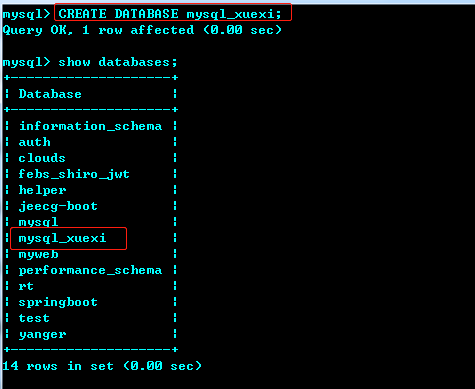
在建完这个库后，我觉得取得名字不好，想改成mysql_study，因为还没有任何表在里面，所以我想删了重建（如果有表存在，修改数据库名还是有些复杂的，所以取名这件事生下来还是要慎重对待）。
删除数据库使用DROP DATABASE 数据库名;语句、
DROP DATABASE 数据库名;当然删库是一个危险的动作，为了避免删库跑路，删库前务必做两件事，一确认自己没有发烧，二确认自己的确认是对的。这里我的库刚建的，所以确认无误了。
然后创建了mysql_study数据库，那我们现在想使用这个库，该怎么做？
我们需要先切换到该库下，使用USE 数据库名称;语句。
USE 数据库名称;切换到对应库后，我们可以使用SHOW TABLES;来查看库中的表。因为刚刚创建的，还是热乎的，所以里面什么也没有。
表的基本操作
那我们快来创建第一个表吧，使用CREATE TABLE 语句，当然还需要定义表的列属性等。
CREATE TABLE 表名 (
列名1 数据类型 [列的属性],
列名2 数据类型 [列的属性],
...
列名n 数据类型 [列的属性]
);例如我们创建最简单的user表，包含int类型的id，和varchar(5)的name列。
CREATE TABLE user (
id INT,
name VARCHAR(5)
);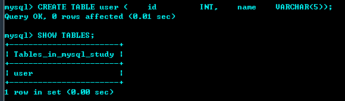
对于创建的表，我们可以使用以下命令查看具体细节。
DESC 表名;
DESCRIBE 表名;
EXPLAIN 表名;
SHOW COLUMNS FROM 表名;
SHOW FIELDS FROM 表名;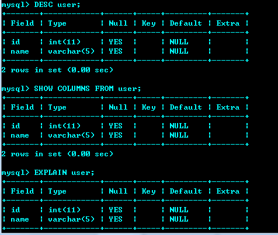
对于数据库的名字，修改不方便， 那表呢？更改表名还是比较容易的，使用ALTER TABLE 表名 RENAME TO 新的表名;即可
ALTER TABLE 表名 RENAME TO 新的表名;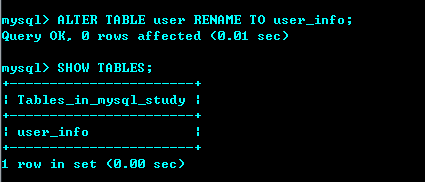
这样就将表名改为了user_info。那如果要删除表呢？使用DROP TABLE 表名;
DROP TABLE 表名;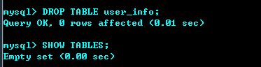
列的基本操作
删完了我又默默将user表创建回来了，因为还要继续使用呢。
如果我们想在user表中增加列属性，如何操作？
ALTER TABLE 表名 ADD COLUMN 列名 数据类型 [列的属性];新增age列。
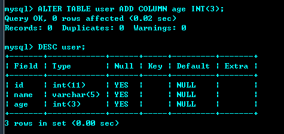
如果要修改列，可以使用下面的语句，MODIFY只支持改列的属性，而CHANGE支持修改列名称和列属性。
# 修改列属性
ALTER TABLE 表名 MODIFY 列名 新数据类型 [新属性];
# 修改列名称
ALTER TABLE 表名 CHANGE 旧列名 新列名 新数据类型 [新属性];比如age，我想改成user_age，且长度只想定义为2位。
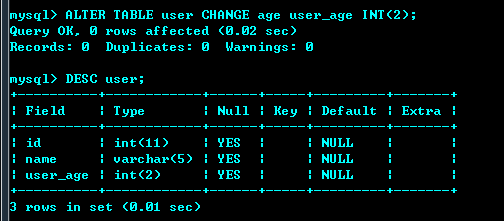
要删除列，既然有ADD、MODIFY、CHANGE，那就应该有DROP，没错。
ALTER TABLE 表名 DROP 列名;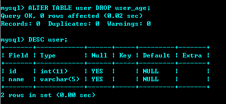
数据的基本操作
有了表，也会操作基本的列，但我们平时说的增删改查，没有数据怎么叫增删改查，所以我们需要来点儿数据。
使用INSERT插入数据，在不指定列的时候，按列的顺序插入，而且必须是列的值必须包含全量的列，而声明列则自由的多
INSERT INTO 表名 VALUES(列1的值，列2的值, ...);
INSERT INTO 表名(列1, 列2, ...) VALUES(列1的值，列2的值, ...);例如在user表插入数据。
INSERT INTO user VALUES(1,'zs');
INSERT INTO user(id,name) VALUES(2,'ls');
INSERT INTO user(name,id) VALUES('ww',3);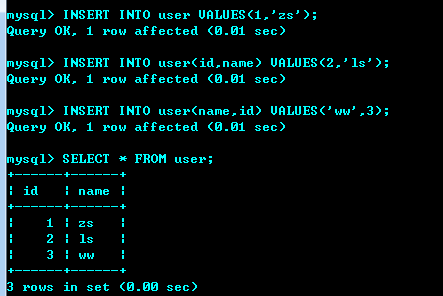
至于查询，相信你已经看到了，使用SELECT语句，SELECT * FROM 表名;是最基本的查询,*表示查看所有的列属性，查询一般需要配合WHERE等条件筛选，操作较复杂，后面会继续深入。
SELECT 列1, 列2, ... FROM 表名 [WHERE条件];修改数据，我们使用UPDATE语句。更新的本质是修改那些符合条件的数据，也即先查询出对应数据，然后再对其做更改。所以一般查询也是需要结合WHERE语句的，不带WHERE的语句会将表中的数据全部更改，这个日常中一定要注意。
UPDATE 表名 SET 列1=列的新值1, 列2=列的新值2, ... [WHERE 条件]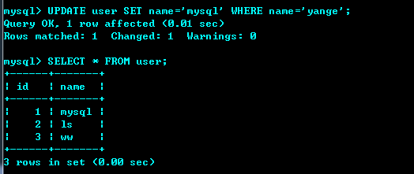
至于删除，使用DELETE语句，该语句一样是个危险语句，注意千万要带上WHERE，除非你是真的要删除所有数据，或者一时脑子发烧了。
DELETE FROM 表名 [WHERE 条件];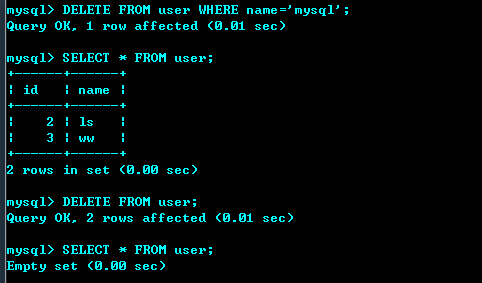
至此，MySQL的基本使用就差不多OK了，当然还有些复杂的语句，我们将在后续继续学习。